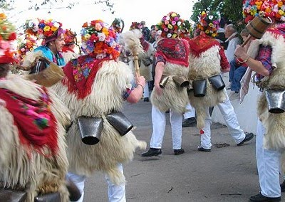

 România a anunțat luni că este interesată de respectarea drepturilor comunității de istroromâni din Croația. Mesajul a fost transmis de către secretarul de stat pentru afaceri europene Bogdan Aurescu care a primit-o, luni, în audiență pe Andrea Gustović Ercegovač, cu ocazia prezentării copiilor scrisorilor de acreditare în calitate de Ambasador Extraordinar și Plenipotențiar al Republicii Croația în România, informează MAE. În cadrul întâlnirii, interlocutorii au trecut în revistă stadiul cooperării bilaterale și au fost de acord că relațiile dintre cele două țări pot fi aprofundate. A fost apreciată vizita Primului Ministru Jadranka Kosor la București din 28 ianuarie 2011 și necesitatea ca aceste vizite la nivel înalt să fie urmate de acțiuni concrete menite a diversifica relațiile bilaterale. Pe durata întrevederii, secretarul de stat Bogdan Aurescu a reiterat interesul părții române privind comunitatea de istroromâni din Croația și dorința protejării în comun cu partea croată a acestui grup etno-lingvistic ca o contribuție la diversitatea culturală a Europei. Secretarul de stat Bogdan Aurescu a reafirmat poziția României cu privire la continuarea susținerii parcursului european al Croației și aderarea acestei țări la UE. Reamintim că această comunitate a istroromânilor număra astăzi circa 3.000 de oameni deși în ultimul secol existau cel puțin 10.000 de români. Pericolul asimilării acestora cu populația locală este foarte crescut.
Cine sunt istroromânii?
Istroromânii sunt concentrați în special în opt localități din partea croată a peninsulei Istria și în două localități din partea slovenă a peninsulei. În Croația este vorba de satul Žejane / Jeiăni (cel mai mare dintre ele, situat la nord de Muntele Mare sau Maggiore / Učka) din plasa Mune, județul (zupanija) Primorsko-Goranski, precum și de satul Šušnjevica / Sușnevița sau Val d’Arsa și cătunele Brdo / Barda, Jesenovik / Sucodru, Nova Vas / Nosela, Kostračani / Costârceani, Letaj / Letai și Zankovci din plasa Kršan / Crișan, județul (zupanija) Istria, iar in Slovenia este vorba de localitățile Golac si Polijane. Multe surse vorbesc și despre alte localități din peninsula Istria, cum ar fi Dolinscina, Draga, Drazina, Gradinje, Grobnik, Jelavici, Miheli, Trkovci, Perasi, în care există astăzi vorbitori ai dialectului istroromân. Se mai cunoaște că acum șapte decenii existau vorbitori ai acestui dialect și în alte sate sau cătune din peninsulă, cum ar fi: Munc, Liubici, Brig, Banascra, Mune Mare, Negri, Schilazzo, Santa Lucia, Ceravizzo, Carbune, Carnita, Stara Guna, Corte Alba, Vlasca, Vlahi, Faragun, Catun, Cepici, Litul, Runchi, Tuplite, Cuculeani, Rumeri, Romania, Vale, Vlahobreg, Vodite și altele. Toponimia peninsulei ne demonstrează însă o prezență masivă a istroromânilor în evul mediu: două așezări cu denumirea România, altele unsprezece cu denumirea Cătun, apoi Vlasici, Vlașcova, Voloșca, Vlahova, Rumeni, Spinei, Murari, Sugari, Ciobani, Ciubanici, Ierbuliște, Bolobani, Bolovani, Buzet, Sarman, Floricici. În 1896, Teodor T. Burada publica o listă de 114 localități sau cătune istriote populate altadată de români și care își pierduseră în secolul XIX limba maternă, dar mai păstrau un șir de caracteristici etnice românești. Istroromâna este o limbă distinctă aparținând subgrupului de est al limbilor romanice, la fel ca româna, aromâna și meglenoromâna. Alți specialiști consideră că istroromâna este un dialect al limbii române.
Răzvan Iorga
March 15, 2011
© 2011 Karadeniz Press